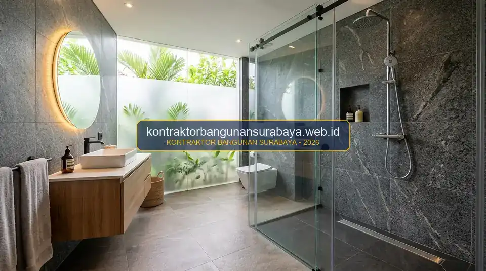

1. Bagaimana Cara Merenovasi Dapur dan Kamar Mandi agar Fungsional dan Tahan Lama?
Merenovasi dapur dan kamar mandi agar fungsional dan tahan lama membutuhkan perhatian khusus pada sistem plambing, pemilihan material anti air, serta tata letak yang memperhatikan alur kerja dan sirkulasi udara.
kontraktorbangunansurabaya.web.id membantu pemilik rumah di Surabaya merencanakan renovasi dua area paling sering digunakan ini agar hasilnya awet dan nyaman digunakan sehari-hari, baik melalui layanan renovasi bangunan komprehensif maupun paket peremajaan interior dan finishing modern.
Tantangan Utama Ruang Basah (Wet Area)
Dapur dan kamar mandi merupakan area dengan tingkat kelembapan, paparan air, serta frekuensi aktivitas mekanis tertinggi di dalam rumah. Tanpa perencanaan waterproofing dan pipa yang presisi, rembesan air dapat merusak struktur dinding, memicu jamur beracun, dan merusak plafon di lantai bawah.
2. Perencanaan Ulang Sistem Plambing Sebelum Renovasi Dimulai
Renovasi dapur dan kamar mandi seringkali melibatkan perubahan posisi keran, wastafel, atau kloset, sehingga jalur pipa air bersih dan air kotor perlu direncanakan ulang sejak awal, bukan menyesuaikan jalur pipa lama yang mungkin sudah tidak sesuai dengan tata letak baru yang diinginkan.
Pemeriksaan kondisi pipa lama, terutama pada rumah yang berusia cukup tua, juga penting dilakukan sebelum renovasi dimulai, karena pipa yang sudah berkarat atau tersumbat sebaiknya sekaligus diganti pada momen renovasi, dibanding dibiarkan dan berpotensi menimbulkan masalah kebocoran di kemudian hari.
Penentuan titik saluran pembuangan air (floor drain) pada kamar mandi juga perlu direncanakan dengan kemiringan lantai yang tepat menuju titik tersebut, agar air tidak menggenang di sudut-sudut ruangan yang jauh dari saluran pembuangan utama.
| Elemen Plambing | Standar Material Terbaik | Masalah Kerap Terjadi | Solusi Teknis Kontraktor |
|---|---|---|---|
| Pipa Air Bersih | PPR (Hot/Cold) atau PVC AW Class | Tekanan drop & sambungan lem bocor | Penyambungan las pipa pemanas (heat fusion) PPR |
| Pipa Air Kotor & Buangan | PVC D/AW diameter 3" - 4" | Endapan lemak & bau naik dari got | Pemasangan bak kontrol grease trap & pipa leher angsa (P-trap) |
| Waterproofing Lantai | Cementitious 2-komponen fleksibel | Air merembes ke dak lantai bawah | Pelapisan 2 layer + serat fiberglass sudut plint 15 cm |
| Kemiringan Saluran | Gradien kemiringan lantai 1% - 2% | Genangan air memicu lumut & noda kerak | Screeding presisi waterpass mengarah ke floor drain |
3. Tata Letak Dapur dan Kamar Mandi yang Mendukung Alur Kerja
Tata letak dapur yang baik umumnya mengikuti prinsip segitiga kerja antara area kompor, wastafel, dan kulkas, agar aktivitas memasak dapat dilakukan dengan pergerakan yang efisien tanpa harus berjalan bolak-balik jarak jauh antar area tersebut.

Untuk kamar mandi, pemisahan zona basah dan zona kering menggunakan partisi kaca atau perbedaan ketinggian lantai membantu menjaga area di luar shower tetap kering, sehingga risiko lantai licin dan pertumbuhan jamur pada dinding dapat diminimalkan.
Zona Dapur Ergonomis
- Storage Zone: Lemari kabinet & kulkas untuk penyimpanan bahan makanan.
- Cleaning Zone: Kitchen sink, rak tiris piring, dan tempat pembuangan sampah organik.
- Cooking Zone: Kompor tanam, oven/microwave, dan cooker hood penyedot asap.
Kamar Mandi Higienis & Aman
- Wet Zone (Shower): Dilengkapi floor drain anti serangga dan dinding keramik anti noda.
- Dry Zone (Vanity & WC): Kloset duduk, cermin LED, stop kontak waterproof bersertifikasi IP44.
- Ventilasi Aktif: Exhaust fan plafon untuk sirkulasi pembuangan uap lembap.
Sirkulasi udara yang baik, baik melalui jendela, ventilasi, maupun exhaust fan, juga penting diperhatikan pada kamar mandi tertutup tanpa bukaan langsung ke luar, agar kelembapan berlebih tidak terperangkap dan memicu pertumbuhan jamur pada langit-langit maupun dinding kamar mandi.
4. Eksekusi Renovasi yang Rapi dan Minim Gangguan Bersama kontraktorbangunansurabaya.web.id
Renovasi dapur dan kamar mandi biasanya membuat area tersebut tidak dapat digunakan sementara waktu, sehingga perencanaan alternatif, misalnya dapur sementara sederhana di area lain rumah, perlu dipikirkan sejak awal terutama untuk proyek yang membutuhkan waktu pengerjaan lebih dari beberapa hari.
kontraktorbangunansurabaya.web.id merencanakan urutan pekerjaan renovasi dapur dan kamar mandi agar durasi ketidaknyamanan bagi penghuni rumah dapat ditekan seminimal mungkin, tanpa mengorbankan kualitas hasil akhir pekerjaan plambing maupun finishing sebagaimana dikonsultasikan dalam tahap desain gambar kerja dan RAB terinci.
SOP Pengujian Kualitas Sebelum Pemasangan Keramik:
- Uji Tekan Pipa Air Bersih: Memberikan tekanan hidrostatik pompa 6-8 bar selama 2-4 jam untuk memastikan tidak ada sambungan pipa yang bocor halus.
- Uji Rendam Waterproofing: Menggenangi lantai kamar mandi selama 1x24 jam untuk memverifikasi kekedapan lapisan anti bocor.
- Inspeksi Kemiringan Lantai: Memastikan air buangan mengalir cepat ke floor drain tanpa meninggalkan sisa genangan.
- Ergonomi Ketinggian Sanitair: Menyesuaikan tinggi shower head (200-210 cm) dan meja wastafel (80-85 cm) sesuai postur pengguna.
Pengujian kebocoran pada sistem plambing baru, misalnya dengan mengisi air dan memantau selama beberapa jam sebelum area ditutup keramik, juga menjadi langkah penting yang tidak boleh dilewatkan untuk memastikan tidak ada kebocoran tersembunyi sebelum pekerjaan finishing dimulai.
Pemilihan ketinggian pemasangan shower dan aksesoris kamar mandi lainnya juga sebaiknya disesuaikan dengan tinggi rata-rata penghuni rumah, agar kenyamanan penggunaan sehari-hari tetap terjaga, bukan hanya mengikuti standar umum tanpa mempertimbangkan kebutuhan spesifik keluarga yang menghuni rumah tersebut.
Untuk gambaran biaya sebelum memulai renovasi, simak juga panduan mengenai estimasi biaya renovasi dapur dan kamar mandi per titik pekerjaan serta pilihan material pada panduan harga jasa interior finishing per meter.
Garansi Resmi dan Ketepatan Jadwal
Seluruh pekerjaan instalasi pipa air, kelistrikan tersembunyi, dan lapisan waterproofing kamar mandi dilindungi garansi resmi dari Tim Kontraktor Bangunan Surabaya untuk kenyamanan hunian jangka panjang.
5. FAQ Seputar Renovasi Dapur dan Kamar Mandi
6. Konsultasi Gratis Sekarang
Ingin berdiskusi lebih lanjut mengenai kebutuhan konstruksi bangunan Anda di Surabaya? Hubungi tim kami melalui WhatsApp di 0889-8964-3555 untuk konsultasi awal tanpa biaya bersama kontraktorbangunansurabaya.web.id.
Konsultasi WhatsApp di 0889-8964-3555Tim Renovasi & Interior Kontraktor Bangunan Surabaya
Divisi Spesialis Peremajaan Bangunan, Tata Ruang Basah, Instalasi Sanitair & Custom Furniture. Berpengalaman menangani renovasi rumah tinggal, villa, dan komersial dengan standar kerapian tinggi dan garansi mutu di wilayah Surabaya Raya.